停车场系统的局域网原则上是尽量做简单傻瓜一点,不要涉及三层及以上的数据交换,
基本上两层交换就可以满足大多数停车场的要求.
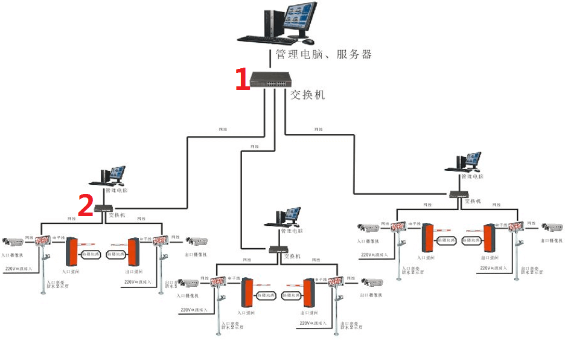
上图就是两层的数据交换网络示意图,层级越少对于我们系统来说检修就越方便且系统也越稳定.
下面以组建简单的停车场局域网为例说明局域网组网的方法和一些技巧.
准备材料及工具:四芯光缆(长度客户自己核算),光纤盒,光收发器,光纤跳线,光纤耦合器,交换机,网线,水晶头,网线钳.
光缆传输相关设备图片如下:
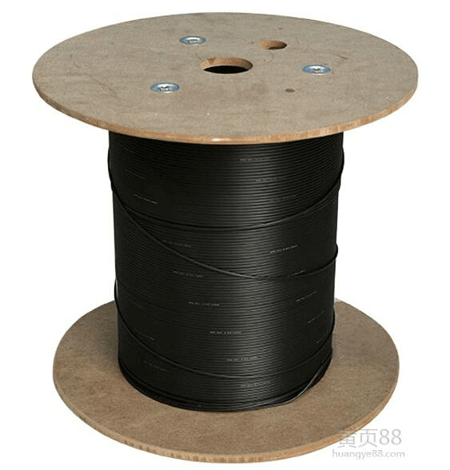光缆
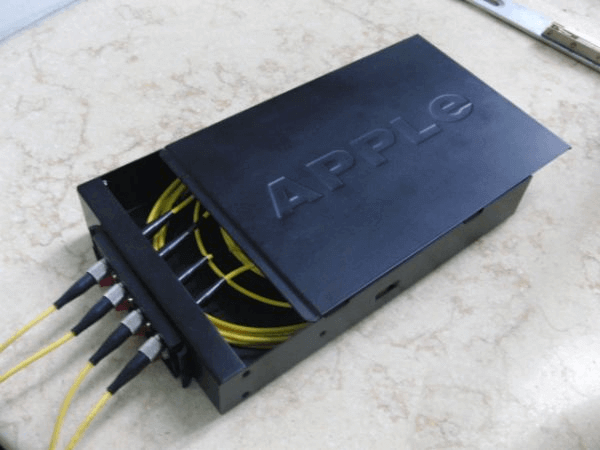光纤盒
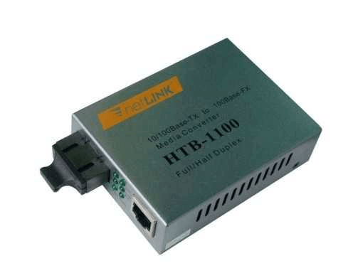光收发器
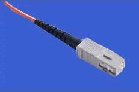
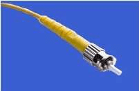光纤跳线SC\ST(尾纤)
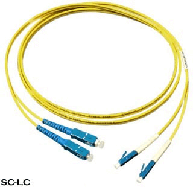完整的一根跳线
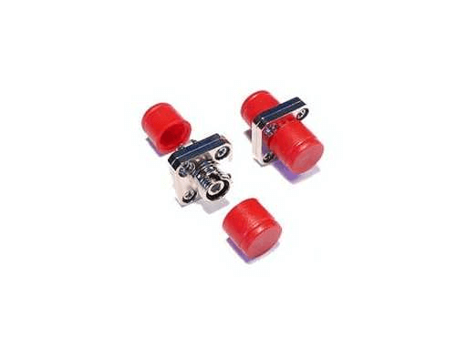光纤耦合器(法兰盘)
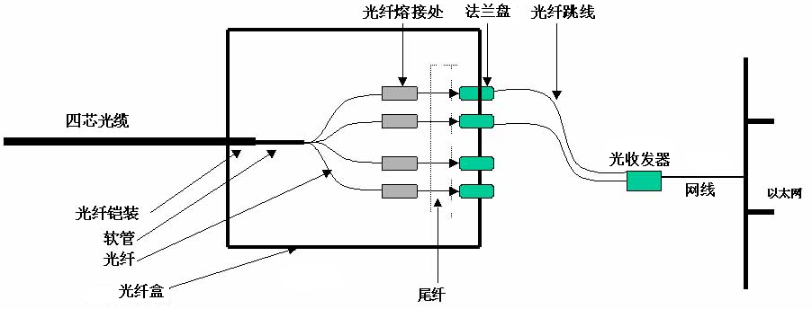
先光缆从室外进来,光缆要熔接在光纤盒里.光缆的熔接是门技术,需要把光缆剥开,用尾纤与光缆里的细纤维熔接,熔接好放在
盒子里,这样我们尾纤就出来了.光纤出来的头接在ODF上(一种架子,用光纤耦合器连接),架子的另一侧也是用尾纤(说是光纤跳线
也可以,其实尾纤就是做光纤跳线用的)出来,接在光收发器上,光收发器出网线连接路由器----交换机---局域网---主机.
在上面的步骤可以忽略光纤的配线架,尾纤出来后直接接在光纤收发器上,这样也不用耦合器了.
光信号通过光收发器转成电信号后,经过交换机再将数据传输到各个电脑,这部分比较简单,日常应用也很多,就不展开讲解了.
示意图如下:
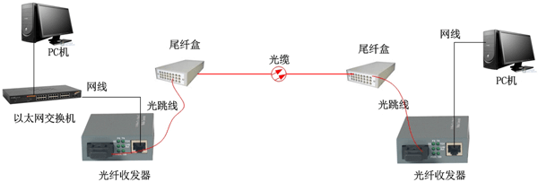
停车场网络组成后,给每台电脑分配IP地址,IP地址必须唯一.
如岗亭A电脑IP是192.168.1.2,岗亭B电脑是192.168.1.3.
简单测试网络是否连通的方法:
在B岗亭电脑输入如下命令,测试能否访问A电脑:ping 192.168.1.2 -t
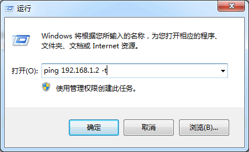
出现下图表示与A岗亭电脑通讯正常:
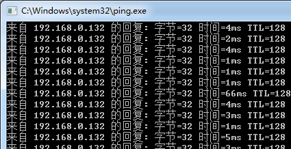
上面只是简单介绍了局域网组网的基本知识,实际应用时可根据现场情况灵活调整.
以1进1出集中管理的停车场为例说明放线规则:从岗亭放1根网线+1根电源线到入口摄像机,其中电源线是到显示屏,然后从摄
像机放2根网线到道匣,从显示屏放1根电源线到道匣.出口一样,也是从岗亭放1根网线+1根电源线到入口摄像机,其中电源线是到显
示屏,然后从摄像机放2根网线到道匣,从显示屏放1根电源线到道匣.
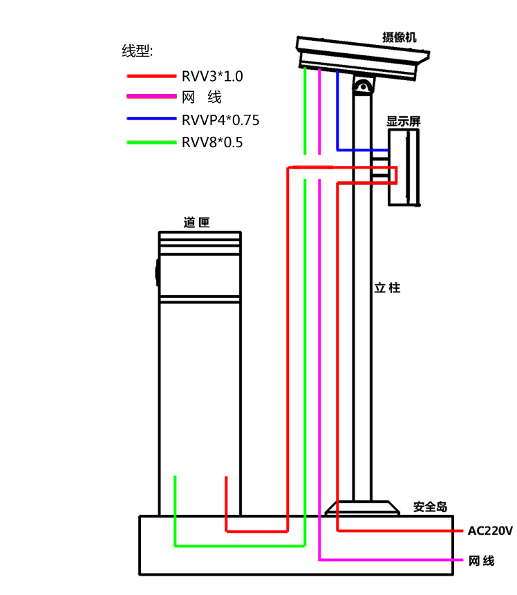直观的布线图
从上图可以看出从岗亭过来是2根主线,在立柱里要穿4根主线,只要记住这两点,线就不会放错.
最后需要注意的一点是,放线时要留余线3米,用于向上穿过立柱接提示屏和摄像机.
a.主要机具 冲击钻:主要用于设备固定,穿墙打孔. 手电钻:主要用于各种材料的打孔及线槽、线管固定. 手提切割机:主要用于切地感,水泥路面的切槽. 电锤:工作电压为交流220V供电,主要用于水泥路面的开沟. 万用表、电笔、斜口钳、尖嘴钳、大小一字螺丝刀、大小十字螺丝刀等。 b.安全鸟浇筑 安全岛是安装设备的基础,同时也起到保护设备的作用. 安全岛上如果不放岗亭,则尺寸一般为5000mm×600mm×150mm,若车道是笔直的,长度可以缩短到3米.放安全岛的岗亭,尺寸一 般为6000mm×1500mm×150mm,为了美观将两端做成弧形. 在施工过程中,须将地面水泥向下挖出50mm再进行混凝土浇灌工作. c.设备摆放 先将道闸及摄像机设备摆放到位会同甲方人员一起看定位是否合适,最后再敷设管线. 对于地下停车场,道闸上方若有阻挡物则需选用折杆式道闸,阻挡物高度1.2米即为折杆点位置. d.管线敷设 参照前面介绍的放线规则,预埋管线,信号线和电源线要分别穿管. e.设备安装 用道匣出厂自带的四个膨胀螺栓将道匣固定在安全岛上, 摄像机和显示屏立杆需客户自购4个M14的螺栓固定. f.地感线圈埋设 地感线圈的主要用途是防止车辆被砸,当地感检测到车辆时不允许道匣落杆. 在道匣杆正下方切一个1800mm×600mm的线槽,深度为5cm,宽度为5mm,实际使用时线槽的大小应以车道大小而定,尽量让来自 不同方向的车辆能压到线圈的边缘处,因为线圈的边缘处感应最强.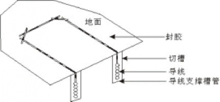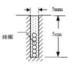地感切割示意图
铺设地感线圈时,一般都是围绕地感线槽放5圈,圈数不够,可能底盘高的车辆会检测不到. 线圈的接头处到地感检测器的插头处一定要双绞,双绞可以滤除干扰,有效的防止地感的死机与误动作. 当两地感线圈的中心距离在五米之内时,线圈的圈数或面积一定不能相同（可在绕线时线圈的圈数错开）,否则两线圈会相互 干扰,造成探测失败. 线圈的直角处要切成45度角,目的是为了防止热胀冷缩,线圈给撑断. 有活动导体的地方不能埋设线圈（如不能太靠近水沟）,否则地感加电后很难复位. 线圈的固定方法:然后用净水泥封上或最好能用环氧树脂加固化剂封口. 注意:不要让线圈松动,线圈的松动会直接造成地感检测器的死机. 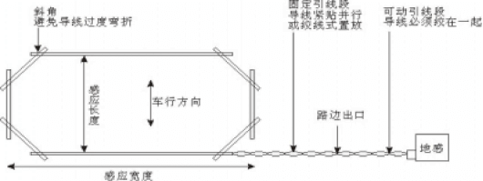
接线比较简单,看下面两张图就能明白.
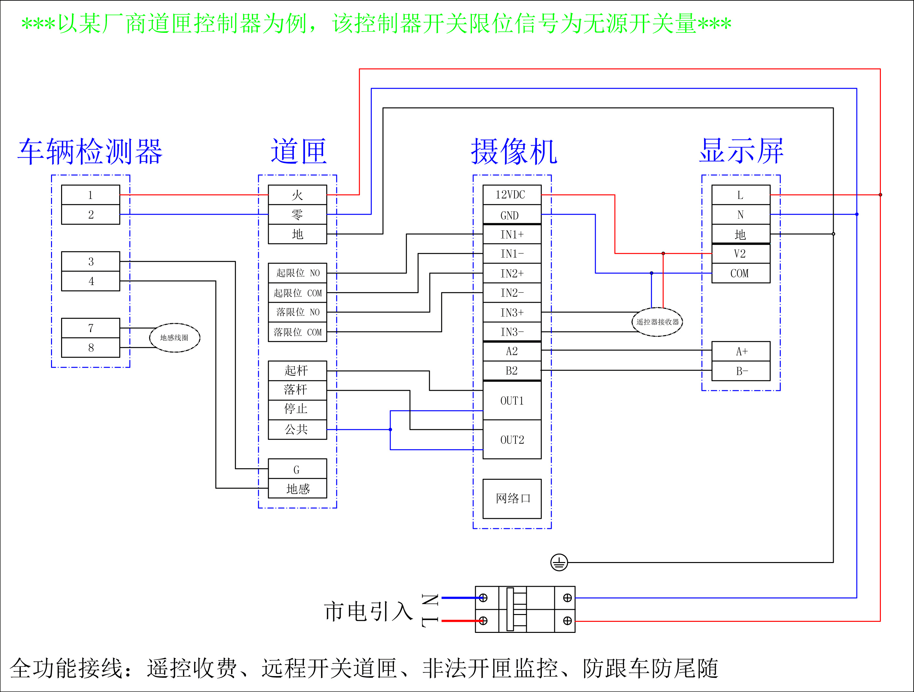全功能接线图,道匣接口不同厂商有不同
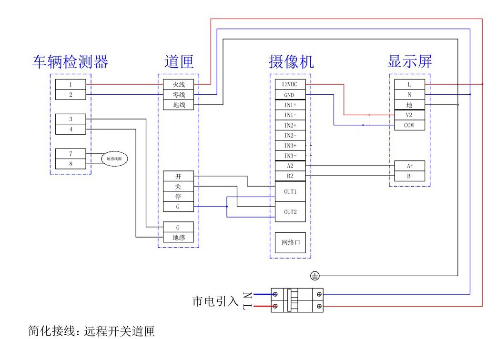简化功能接线图
上图遥控收费是选配功能,需搭配硬件支持.
常见的就是按照简化功能接线图接线.